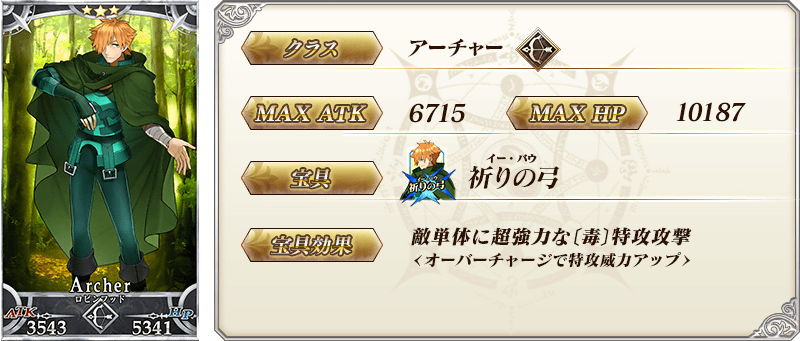
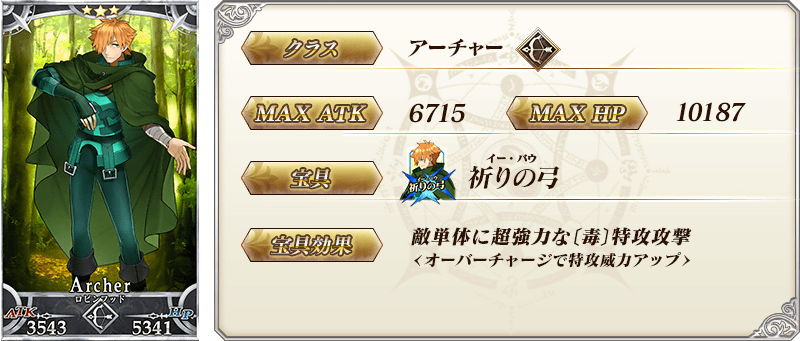
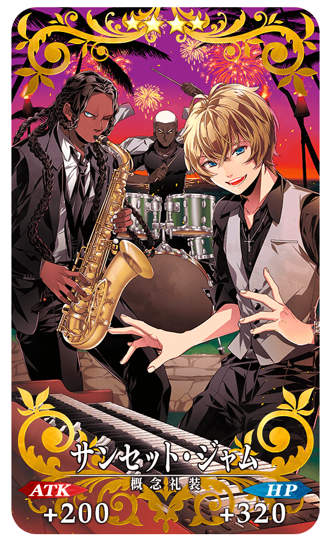
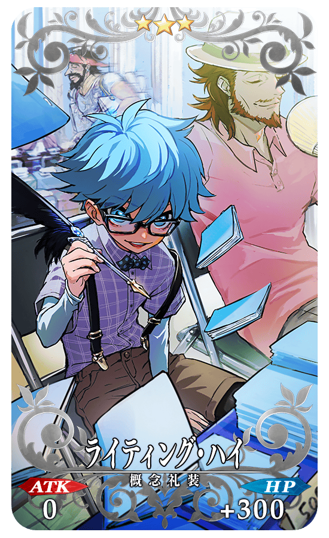
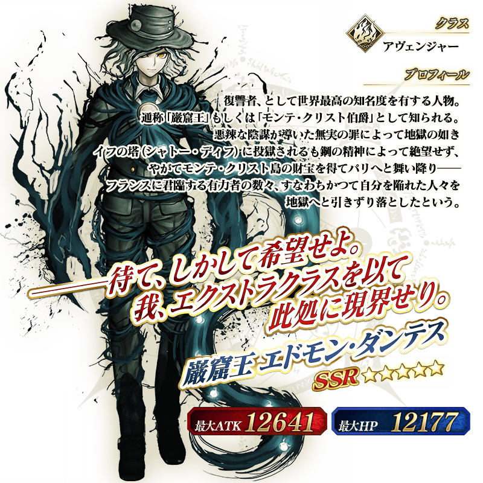
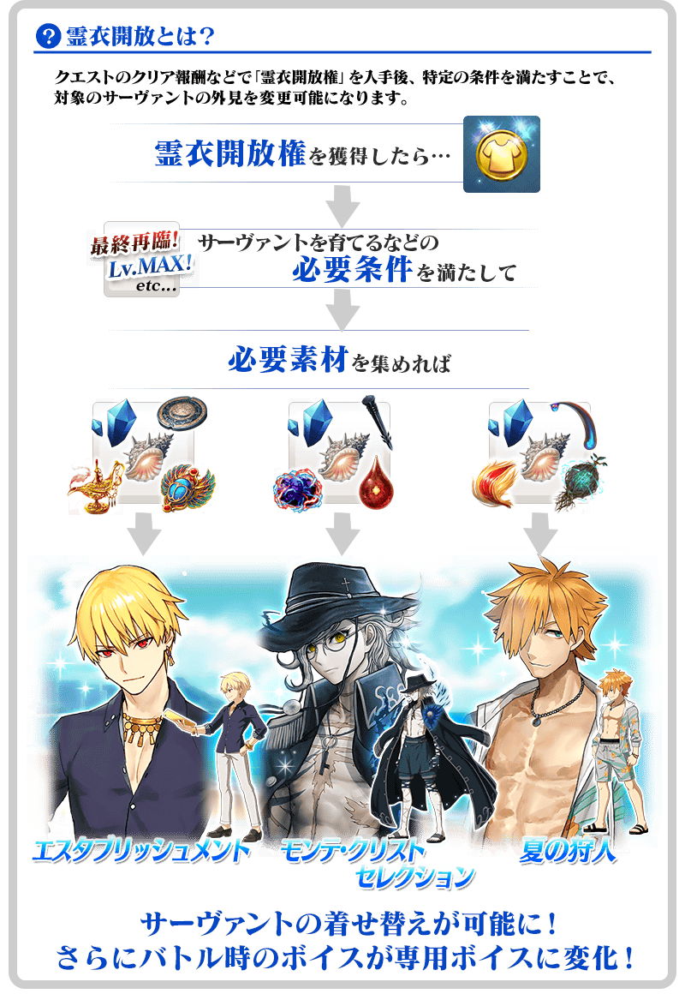

◆「復刻 從者★慶Pick Up2召喚」期間◆
期間:2019年7月17日(三) 17:00～8月3日(六) 11:59
舉辦期間限定「復刻 從者★慶Pick Up2召喚」！
變更在2018年舉辦的「從者★慶Pick Up2召喚」一部份內容進行復刻。
於期間限定活動「復刻:從者夏日慶！ 輕量版」活躍的期間限定從者「★5(SSR)巖窟王 愛德蒙・唐泰斯」登場！
並且「★4(SR)吉爾伽美什(Caster)」「★3(R)羅賓漢」Pick Up！
詳情請在聖晶石召喚畫面左下的召喚詳細確認。
「★5(SSR)ヒーロー・オン・ザ・ビーチ」「★4(SR)サンセット・ジャム」「★3(R)ライティング・ハイ」做為期間限定概念禮裝登場！
裝備上述3種概念禮裝的話，在期間限定活動「復刻:從者・サマー・フェスティバル！ 輕量版」中會提升活動道具的掉落獲得數。
◆有關從者的注意◆
※「★5(SSR)巖窟王 愛德蒙・唐泰斯」在Pick Up期間結束後不會追加到故事召喚。
※「★4(SR)吉爾伽美什(Caster)」「★3(R)羅賓漢」在Pick Up期間結束後仍會在故事召喚被抽出。
◆有關概念禮裝的注意◆
※請注意會做為對象被抽出的期間限定概念禮裝只限「★5(SSR)ヒーロー・オン・ザ・ビーチ」「★4(SR)サンセット・ジャム」「★3(R)ライティング・ハイ」，其他的期間限定概念禮裝為抽出對象外。
※「★3(R)ライティング・ハイ」在Pick Up期間中，也能靠友情點數召喚獲得。
※請注意自友情點數召喚抽出的「★3(R)ライティング・ハイ」在自動變還設定登錄★3(R)概念禮裝的情況，會變成自動變還的對象。
Pick Up期間中，期間限定從者、Pick Up從者、期間限定概念禮裝的出現機率提升！
10次召喚中確定1張★4(SR)以上和確定1位★3(R)以上的從者！
※確定★4(SR)以上包含從者和概念禮裝。
※本頁面皆為開發中圖片。會有與實際圖片相異的情況。

 ※上述「★5(SSR)巖窟王 愛德蒙・唐泰斯」的卡面為靈基再臨第2階段。
※上述「★5(SSR)巖窟王 愛德蒙・唐泰斯」的卡面為靈基再臨第2階段。


 
※上述「★3(R)羅賓漢」的卡面為靈基再臨第2階段。

※上述「★3(R)羅賓漢」的卡面為靈基再臨第2階段。

|
★★★★★SSR |
※為了改善識別性，「BB$鈔」的顏色從上次舉辦時變更。
|  |
★★★★SR |
|  |
★★★R |

 ※上述「★5(SSR)巖窟王 愛德蒙・唐泰斯」的立繪為靈基再臨第2階段。
做為期間限定活動「復刻:從者夏日慶！ 輕量版」的關卡報酬，「★5(SSR)巖窟王 愛德蒙・唐泰斯」「★4(SR)吉爾伽美什(Caster)」「★3(R)羅賓漢」的靈衣開放權登場！
主線關卡的進行及累積3個各活動點數(同人活動力、同人探求力、同人空想力)的話會出現可獲得靈衣的關卡，通過該關卡的話可得到靈衣開放權！
另外，想開放靈衣開放的話，除了靈衣開放權外必須再加上一些開放條件。
◆有關靈衣開放權的注意◆
※「★5(SSR)巖窟王 愛德蒙・唐泰斯」「★4(SR)吉爾伽美什(Caster)」「★3(R)羅賓漢」的靈衣開放權只限期間限定活動「復刻:從者夏日慶！ 輕量版」的活動舉辦期間才能入手。
※在上次舉辦時獲得過「靈衣開放權」的情況，「復刻輕量版活動」中的通過報酬會將「靈衣開放權」變更成「稀有稜鏡」。
※請注意未持有「★5(SSR)巖窟王 愛德蒙・唐泰斯」「★4(SR)吉爾伽美什(Caster)」「★3(R)羅賓漢」的情況，可入手靈衣開放權。但無法進行靈衣開放。

※「靈衣開放」後自動切換戰鬥角色和圖示。若想回到「靈衣開放」前的狀態和變成其他再臨階段的情況，可自從者詳細畫面變更。 ※透過「靈衣開放」只變更從者的外觀和語音，職階和數值沒有變化。 ※請注意一部份的語音沒有變化。

「靈衣開放」是自強化畫面進行。
介紹開放以期間限定復刻的靈衣「モンテ･クリストセレクション」「エスタブリッシュメント」「夏の狩人」的「★5(SSR)巖窟王 愛德蒙・唐泰斯」「★4(SR)吉爾伽美什(Caster)」「★3(R)羅賓漢」的寶具演出！
在「Fate/Grand Order」官方網站內的公告中，以影片公開寶具演出，敬請確認。
介紹「★5(SSR)巖窟王 愛德蒙・唐泰斯」的寶具演出！
在「Fate/Grand Order」官方網站內的公告中，以影片公開寶具演出，敬請確認。
介紹「★4(SR)吉爾伽美什(Caster)」的寶具演出！
在「Fate/Grand Order」官方網站內的公告中，以影片公開寶具演出，敬請確認。
其他還有，期間限定活動「復刻:從者夏日慶！ 輕量版」和期間限定「復刻 從者★慶Pick Up1召喚(每日交替)」同時舉辦！
關於詳情，請自下述橫幅確認。
■「復刻:從者夏日慶！ 輕量版」詳細情報

■「復刻 從者★慶Pick Up1召喚(每日交替)」詳細情報